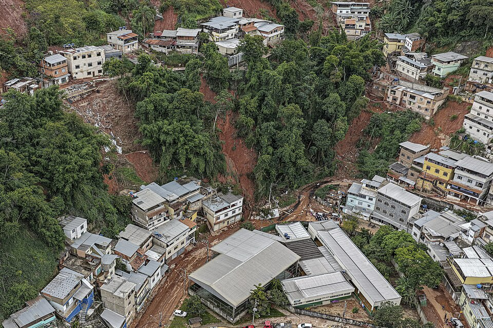
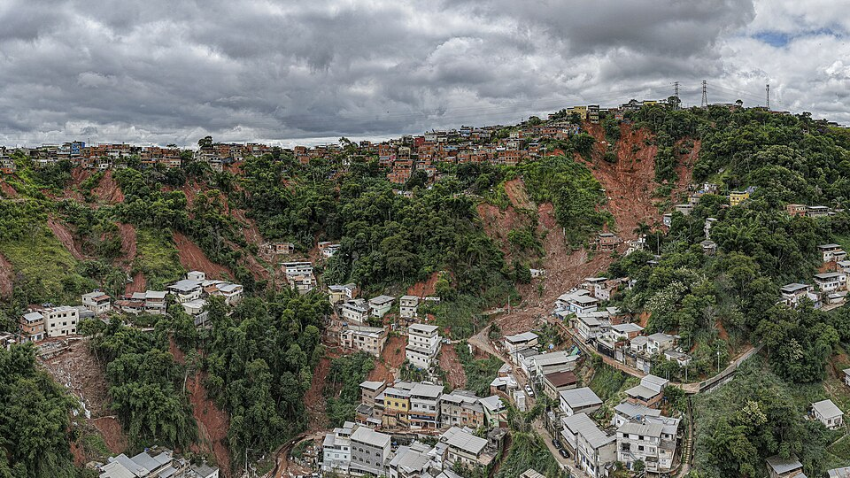
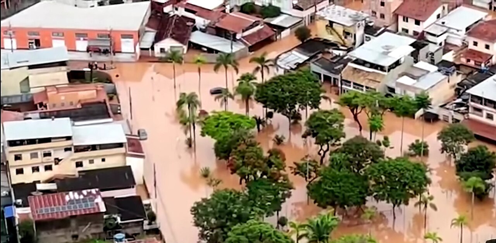

Normal
1 de 4
Sem chuva forte prevista. Depois de muita chuva o solo ainda pode ceder: viu rachaduras, ligue 199.
- Quando
- Nenhuma chuva forte na previsão.
- No sensor da Fase 2
- Tudo abaixo dos limites.
- Na rua
- LED verde aceso.
Juiz de Fora (MG) · protótipo FIAP 2026
Alerta de chuva no WhatsApp, com o nome da sua rua, para quem mora nas áreas de risco de Juiz de Fora. O ALERA cruza a previsão do tempo com as áreas de risco mapeadas e diz o nível de perigo da sua rua, o que fazer e onde fica o abrigo mais perto.
ALERA alerta da sua rua
Hoje
Normal
Rua Exemplo: sem chuva forte prevista. Depois de muita chuva o solo ainda pode ceder. Viu rachadura na parede ou no barranco? Ligue 199. Abrigo mais perto: Escola Municipal Exemplo, 600 m.
06:10
Atenção
Rua Exemplo: chuva prevista para hoje. Confira seu abrigo e tire o lixo da frente do bueiro. Abrigo mais perto: Escola Municipal Exemplo, 600 m.
06:10
Alerta
Rua Exemplo: chuva forte em até 24 horas. Evite a rua e deixe os documentos à mão. Abrigo mais perto: Escola Municipal Exemplo, 600 m.
06:10
Perigo
Rua Exemplo: risco agora. Saia de casa e vá para o abrigo. Abrigo mais perto: Escola Municipal Exemplo, 600 m, 8 min a pé. Emergência: Defesa Civil 199.
06:10
Demonstração: o abrigo e o horário são de exemplo.

O problema
Fevereiro de 2026 foi o pior verão da história recente de Juiz de Fora. A chuva caiu sobre uma cidade de morro, com 128 mil pessoas morando em área de risco e bueiro entupido de lixo.
O alerta que existe hoje vale para a cidade toda. Ele não diz qual rua ou qual encosta corre risco, e quando todo aviso parece igual, ninguém sai de casa. O ALERA manda o aviso com o nome da sua rua.

Fevereiro de 2026, Juiz de Fora
65
pessoas morreram em Juiz de Fora nas chuvas de fevereiro de 2026.
Fonte: Polícia Civil, via DGABC, 1 mar. 2026.
Desabrigados
8.854
pessoas desabrigadas ou desalojadas.
Prefeitura, via Agência Pública
Área de risco
128 mil
pessoas vivem em áreas de risco na cidade.
Cemaden, via Estado de Minas
Risco geológico
142
áreas de risco geológico mapeadas em Juiz de Fora.
Lixo nos bueiros
250 t
de lixo tiradas dos bueiros de janeiro a novembro de 2025.
Prefeitura, via Acessa.com
O aviso de hoje fala da cidade inteira, igual para quem mora no alto do morro e para quem mora no centro. O ALERA fala com cada rua, porque o risco de uma encosta não é o da outra.
O aviso de hoje (exemplo)
Cidade
“Chuva forte em Juiz de Fora. Fique atento.”
O ALERA (exemplo)
Sua rua
“Rua Exemplo: chuva forte em até 24 horas. Evite a rua.”

Como funciona
Começa sem instalar nada, só com o seu celular. Esta é a Fase 1 do projeto, o ALERA Web: três passos entre a nuvem e o seu WhatsApp.
Você informa o telefone e a rua onde mora. É com isso que o aviso deixa de ser da cidade e passa a ser seu.

O ALERA cruza a previsão de chuva com as 142 áreas de risco mapeadas da cidade e decide o nível de cada rua.

Com o nome da sua rua, o nível de risco, o que fazer e o abrigo mais perto. Sem app novo para instalar.

Os níveis
Cada nível tem uma cor, uma regra e uma ordem clara. Os limites em milímetros e no sensor são de demonstração e ainda não foram validados.
1 de 4
Sem chuva forte prevista. Depois de muita chuva o solo ainda pode ceder: viu rachaduras, ligue 199.
2 de 4
Chuva prevista para hoje. Confira seu abrigo e tire o lixo da frente do bueiro.
3 de 4
Chuva forte prevista em até 24 horas. Evite a rua e deixe os documentos à mão.
4 de 4
Risco agora. Saia de casa e vá para o abrigo.
Rua Exemplo
Bairro Exemplo · atualizado há 5 min
Perigo
Risco agora. Saia de casa e vá para o abrigo.
Escola Municipal Exemplo
600 m · 8 min a pé · aberto agora
Prévia da tela de alerta do app no nível Perigo.
No app
No app, cuidar da rua vira missão. Cada missão vale pontos para você e para a sua rua, e as ruas disputam um ranking.
Tire o lixo da boca de lobo da sua rua.
+50 pontos
Avise onde tem lixo acumulado ou bueiro entupido.
+20 pontos
Raiz ajuda a segurar o solo do barranco.
+80 pontos
Deixe o abrigo mais perto salvo no celular.
+10 pontos
Valores simulados: os pontos e o ranking são exemplos.
Fase 2
Os gadgets entram aos poucos, área por área. O dado medido entra no mesmo alerta do WhatsApp do morador, e os gadgets também enviam notificações para a Defesa Civil e para a Secretaria de Obras de Juiz de Fora.
Fica na encosta e mede o risco ali mesmo, antes da terra descer.
Valores de demonstração, ainda não validados.
Um cesto segura o lixo e o sensor avisa a Secretaria de Obras quando é hora de limpar.
O app é uma prévia: a rua, o abrigo e os pontos são de exemplo.
Equipe
Somos os MonkeyNerds, estudantes da FIAP, no Challenge 2026.